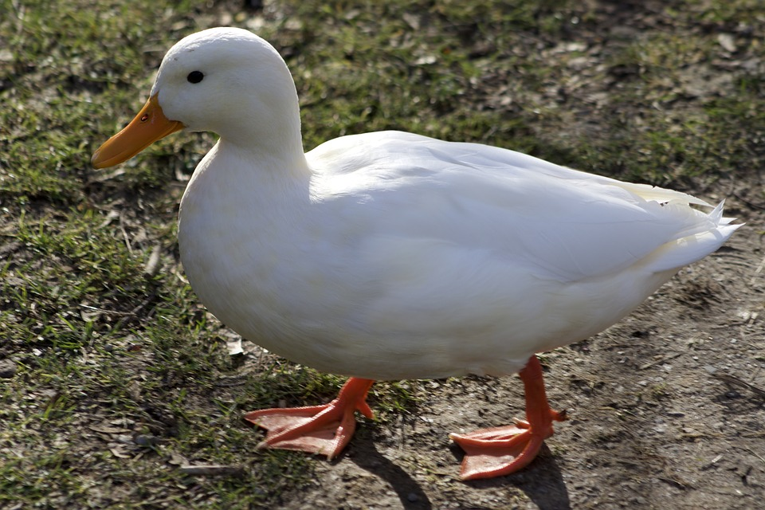

This is a simplified diagram of a cell to show how a virus enters a cell
| Term | Definition |
|---|---|
| Allele | One of the possible forms of a gene. When combined with another allele it codes for different genetic aspects of an organism. |
| Nucleus | The "brain" of a cell. The Nucleus creates genetic code to make its cell work correctly |
| DNA | Stands for Deoxyribonucleic Acid. It is one of the types of pysical copies of the "code" that the Nucleus creates |
| Mutation | A place in DNA or RNA where the original code was modified. This can cause literally no effect, or it can displace every piece of code following the mutation. |
| Gene | A part of the chromosome which codes for a specific trait inherited from a parent to their offspring. |
| mRNA | A form of RNA known as messenger RNA. It contains genetic code similar to DNA, but mRNA takes the code to a ribosome for the creation of Proteins. |
| Protein | A macromolecule made up of many amino acids. It helps build up the structure in an organisms cells. |
| CRISPR | A relatively new technology scientists are using to edit genetic sequences. It can hunt down and destroy viruses. |
| Anticodon | A set of three nucleotides on tRNA that connects to the Codon. It determines which amino acids can connect to a specific spot in the protein. |
| tRNA | Also known as transfer RNA. It holds on to exactly one type of amino acid. It then takes the Amino Acid to a ribosome where it becomes part of a protein. |
| Ribosome | A part of the cell that intakes mRNA, tRNA, and ATP to create a protein. |
| Transcription | A process in which DNA is copied into mRNA. |
| RNA | Stands for Ribose Nucleic Acid. It is a physical form of the "code" that can leave the nucleus to create proteins. |
| Amino Acid | A molecule that can create proteins when put into large numbers. It can be taken to the Ribosome by tRNA. |
| Codon | A set of three nucleotides on mRNA that connects to the Anticodon. It provides a placeholder for tRNA to connect to so that each amino acid is sequenced correctly. |
| Translation | A process in which mRNA is used by the ribosome to create proteins out of amino acid strands. |
| Polymerase | A part in the Nucleus that reads DNA to create mRNA while leaving the DNA unharmed. |
| Nucleotide | The different types of code in DNA and RNA. Each nucleotide is represented as a letter. DNA uses A,T,G, and C. RNA uses A,U,G, and C. |
This is a simplified diagram of a cell to show how a virus enters a cell

The receptor end caps on the virus find a connection point on the cell and attach to it.

The cell begins to merge with the viral membrane

As the viral membrane continues to merge with the cellular membrane, the viral RNA is released into the cell.

The viral membrane is now part of the cellular membrane. The RNA released into the cell now undergoes the process of transcription.

The viral DNA is now transformed into a double helix for infection into the nucleus.

A new molecule takes control of both sides of the double helix.

The viral DNA is taken into the nucleus with the other DNA for the cell.

The molecule "clips" the existing DNA strand and causes a complete seperation between the helixes.

The viral DNA is now a part of the Cell DNA, and the cell will now reproduce the virus.
The Duck Virus is transmitted through duck-to-human contact. If your area is being impacted by the Duck Virus,
STAY AWAY FROM ALL DUCKS!. If you think you have the Duck Virus, please stay away
from all ducks to help your community.
There are different types of ducks, as seen below. Please note the differences between each type of duck.
The Mallard Duck is capable of quickly spreading the virus amongst other ducks
The White Duck is capable of spreading to multiple humans very quickly.
Since ducks are capable of flying, airspace is relatively unsafe as well.
Each piece below was gathered in a hospital by professional journalists.
Hey there doc! I was quack wondering if you could explain why I quack keep quacking?
These problems started quack showing up yesterday when I was eating quackers.
Have you quack found a quack treatment yet? My quack family is a quack little bit quack nervous.
Quack help quack me quack please... QUAAAAAAACK. Excuse quack me.
Many patients have gained an obsession with moving south in the winter. This follows the natural habits of a duck. This can be prevented by placing affected individuals in warmer environments.
Don't fret! There is a developed treatment for the duck virus that can be used to destroy the virus.
Meet CRISPR, the new, natural technology that can track the duck virus and kill off any remaining viruses in your body.
A three-night stay in a hospital is required, and an injection of CRISPR will be needed to destroy the virus.
See how CRISPR works below.
©2019 Charlie Bergdall
All Rights Reserved.